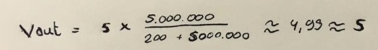

Workshop: Arduino
Assignment
De opdracht
De opdracht ging over het leren werken met Arduino. Arduino is een elektronisch platform voor het bouwen van prototypes. Bij het gebruik van Arduino is er een micro-controller en software programma nodig. De micro-controller wordt gebruikt voor besturen van elektronische apparaten en de software programma zorgde ervoor dat er gecodeerd kon worden.
Door deze opdrachten uit te voeren kreeg ik ervaring in het verbinden van elektronica aan micro-controllers en leerde ik te programmeren. Dit was een goede oefening voor de HCI-lab weken.
Opdracht 3c
De opdracht
De opdracht “Blink multiple LEDs” ging over het verbinden van twee LED’s aan het circuit. In deze opdracht moest de code versimpeld worden, zodat het ook gemakkelijker te lezen was. Zo werd de variabele “LED-BULLETIN” veranderd in “13”. Het nummer slaat op de pin waar een weerstandsdraad in moest. Op deze manier konden meerdere weerstandsdraden van elkaar gescheiden worden.
Door het circuit na te maken. Kon het licht worden beinvloed door middel van code. Zo had ik bij opdracht 3C ervoor gezorgd dat het groene lichtje twee keer zo snel knipperde dan het gele lichtje.
Dat deed ik door in de "void loop" de gegevens van pin 13 twee keer achter elkaar te plaatsen met dezelfde waardes. De waardes van een keer branden is namelijk "HIGH" en "LOW"
Vervolgens heb ik pin 12 daarna geplaats met een hogere delay, zodat het gele lampje langer zou branden.


Opdracht 4c
De opdracht
Deze opdracht ging over de helderheid van lichtjes. De helderheid van lichtjes kon worden aangepast met de “analogWrite()” functie. De volledige helderheid was dan 255 en wanneer de lichtjes uit zijn dan was de helderheid 0.
De pins die ik hiervoor gebruikte was pin nummer 9 en 10. Dit omdat deze pins geschikt waren om de lichtjes een dim effect te geven.
Voor deze opdracht moest een LED langzaam aangaan en de andere langzaam uitgaan. Met het “fade” effect.
Om dit te realiseren had ik vijf variabelen aangemaakt. Twee variabelen voor iedere pin en twee om de helderheid aan te geven. Waarbij de ene helderheid een variabele heeft van 255 en de ander 0. Om ervoor te zorgen dat het licht langzaam komt en gaat heb ik een fadeamount variabele gebruikt.
Ik heb een if-statenment gebruikt, waarin ik aangaf dat wanneer pin 10 “0” of “255” is, hij langzaam uitgaat. Ditzelfde had ik ook aangegeven voor pin 9. Alleen had ik in de code aangegeven dat pin 9 begint bij 255 in plaats van 0.

Opdracht 6c
De opdracht
In deze opdracht was het de bedoeling om hetzelfde effect te krijgen als bij de vorige opdracht, dus langzaam aan en uit “faden”. Hierbij was het de bedoeling om dit effect te krijgen met een potentiometer.
Ik heb in de code een variabelen aangegeven met een formule erin, namelijk “sensorValue = (sensorValue/1023) *255”. Deze formule zorgde ervoor dat de sensor waarde geschaald wordt naar 0-255 in plaats van 0-1023. Dit was van belang, zodat de LED lichtjes de juiste waardes konden aannemen wanneer de potentiometer werd gebruikt.
In de code heb ik aangegeven dat de waarde begint met 0. Vervolgens heb ik een “map ()” functie gebruikt. In deze map functie waren er 4 cijfers nodig om de waardes van het licht te bepalen. De eerste en derde cijfer bepaalde de waardes van de ondergrens van het doelbereik of huidige bereik. De tweede en vierde cijfer bepaalde dezelfde waardes, maar dan voor de bovengrens. Om de ene pin uit te laten “faden”, wanneer je aan de potentiometer draait, heb ik bij pin 10 de waardes geleid naar 255. Dit zodat pin 10 aan begint en door middel van de map functie uitgaat.

Opdracht 7
De opdracht
Opdracht 7 ging over het laten reageren van licht door middel van een LDR (Light Dependent Resistor). Deze sensor meet de hoeveelheid licht dat op de sensor valt. Het doel van de opdracht was om de sensor te laten reageren op de hoeveelheid licht dat binnenkomt, op basis hiervan zou het lichtje moeten “faden”. De code geeft aan hoe de ene LED voorzichtig in “fade” op het aantal licht dat er binnenkomt en de ander uit “fade”. Om dit effect te krijgen had ik bij het groene lichtje “250-val” gezet, zodat het lichtje aan begint. Bij het gele lichtje had ik “150+val” gezet, zodat het gele lichtje uitgaat. Ik had nog een test gedaan met de lichtjes. Bij deze test moesten beide lichtjes tegelijk reageren op de hoeveelheid licht. Om dit te bereiken had ik de 150 en 250 waardes voor de val weggelaten.


Opdracht 8
De opdracht
In opdracht 8 werkte ik met sensoren. Het ging hierbij om een circuit met twee licht sensoren in plaats van weerstanden. De vraag die gesteld werd was wat er zou het circuit meten met deze sensoren? Als beide sensoren LDR’s zijn dan zouden beide sensoren reageren op de hoeveelheid licht dat binnenkomt. Het licht zal dus veel minder zijn, omdat het nooit de uiterste waardes zou behalen. Bij het hebben van twee variabelen nam ik aan dat deze twee variabelen lineair veranderden, dus zou er geen verschil moeten zijn bij de uitkomsten. Dit kon je terugzien door de volgende formule te gebruiken:
Bij donker en licht situatie:
Bij het hebben van twee variabelen nam ik aan dat deze twee variabelen lineair veranderden en zou de uitkomst bij beide situaties, in dit geval donker en licht, niet veranderen.
Bij een situatie waarin een LDR in het donker zit en een in het licht dan was de V output of helemaal aan 5 of helemaal uit 0.
Formule beide donker:
Formule beide licht:
Formule een donker en een licht:

Na de formules berekend te hebben en het circuit getest te hebben, kwamen er op de serial monitor hoge waardes uit. Hierbij was er wel verschil tussen licht en donker, maar de waardes waren niet gelijk aan de waardes van de formules.
Opdracht 9b
De opdracht
In deze opdracht heb ik gewerkt met Arduino en Processing. Het doel van de opdracht was om een vorm te creëren en deze vorm in een interessante manier te tonen. Om dat voor elkaar te krijgen heb ik een “rect” functie toegevoegd, zodat de vorm een vierkant werd in plaats van een cirkel. Daarnaast heb ik de kleur en achtergrond aangepast door de “background()” een waarde te geven van 300 en de “fill()” een waarde van 255, 180, 300.
Om de vierkant een radius te geven heb ik in de rect functie de waarde 52 toegevoegd. Ook heb ik een float(-100) toegevoegd. Dit maakt dat de vorm als een streepje te zien was, bij weinig licht, en een rechthoek bij meer licht.
Wanneer er licht via de sensor binnenkwam werden de vormen groter en wanneer er minder licht via de sensor binnenkwam werden de vormen kleiner.
Opdracht 10f
De opdracht
In deze opdracht heb ik gewerkt met twee knoppen. Het doel van deze opdracht was dat het licht zou branden wanneer een van de knoppen ingedrukt was, maar niet beide knoppen. Om dit te bereiken had ik een if-statement gemaakt. In deze if-statement heb ik aangegeven dat wanneer de linker of rechter knop ingedrukt wordt het licht aan moet. Als de linker of rechter knop tegelijk of niet wordt ingedrukt dan blijft het licht uit. In het filmpje is ook te zien dat het licht uitblijft, wanneer ik beide knoppen ingedrukt hield.

Opdracht 11b
De opdracht
In opdracht 11 heb ik met een servomotor gewerkt. Dit is een motor die een exacte positie kan aannemen. In de code waren er twee “loops”. In de eerste loop heb ik aangegeven dat servomotor bij bereik van 50 weer terugkeert. In de tweede loop heb ik aangegeven dat als de servomotor kleiner was dan 1 weer terugkeert. Dit zorgde ervoor dat de servomotor nooit verder kon dan de helft. Dat gaf een leuk effect.

Opdracht 12b
De opdracht
In deze opdracht was het de bedoeling om de servomotor te laten reageren op twee knoppen. Hierbij zorgde de ene knop ervoor dat de motor met de klok mee bewoog en de andere knop zorgde ervoor dat de motor tegen de klok in bewoog. Om dit te bereiken had ik een for loop gemaakt waarin ik aangaf dat wanneer de rechter knop ingedrukt was en de motor kleiner was dan 180 de motor met de klok mee bewoog. Wanneer de linkerknop ingedrukt was en de motor groter was dan 0 dan bewoog het tegen de klok in. Dit was aangegeven met de “++”en "-- ".

Opdracht 13b
De opdracht
In de laatste opdracht was het de bedoeling om met behulp van een speaker en code, geluid/muziek te maken.
Ik heb gekozen voor een melodie dat hoge en lage muzieknoten bevat, zodat ik met verschillende muzieknoten kon oefenen.
Zo bevat de melodie een hoge, een lage noot en een noot dat er beetje tussenin zit.